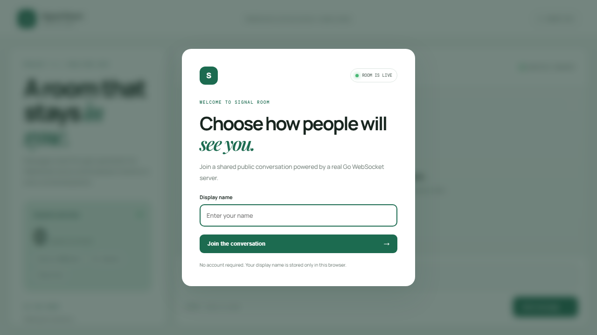
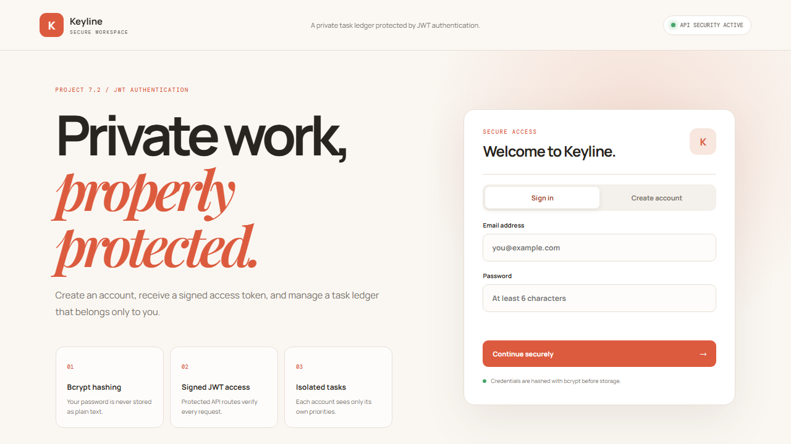
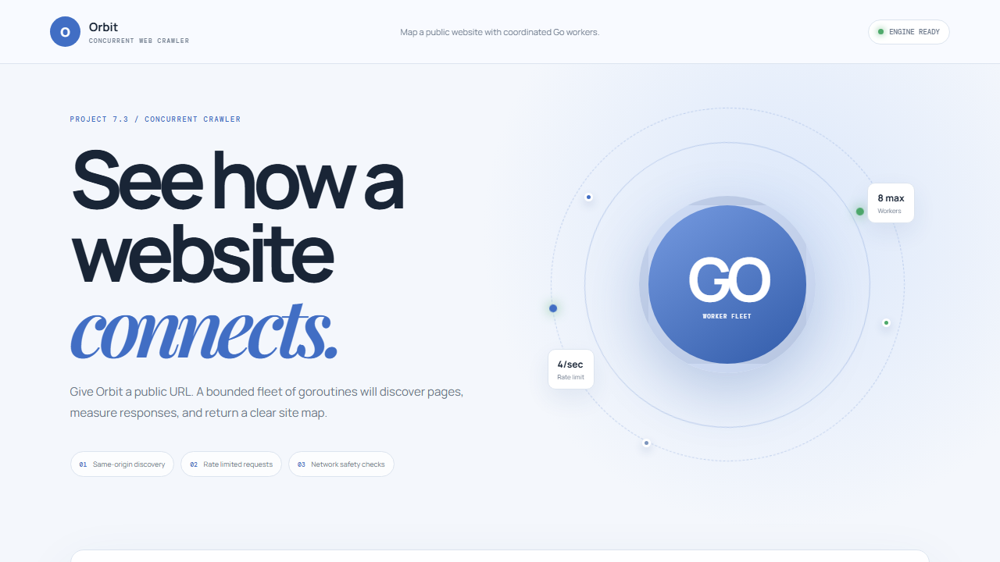

National University of Technology · Artificial Intelligence Department
Lab Manual 12:
Go Projects
A short report on three working Go applications: a live chat room, a secure task API, and a concurrent web crawler.
Course titleProgramming for AI
Course codeCS-282
BatchAI-24 (B)
SemesterFall 2024
Faculty memberLec. Umer Aftab
Submission date13 June, 2026
Student nameMuhammad Anas
Student IDF24607058
01
Project 7.1 · Real-Time Chat Application
Signal Room
01
Signal Room is a public chat application. People choose a display name and send messages that appear instantly for everyone in the room.

What I built
- A live WebSocket connection using Gorilla WebSocket.
- A Go hub that broadcasts messages and shows connected users.
- Automatic reconnect, message history, and a responsive interface.
Tools: Go, Gorilla WebSocket, goroutines, channels, HTML, CSS, JavaScript
02
Project 7.2 · REST API with JWT Auth
Keyline Workspace
02
Keyline is a private task workspace. A user can create an account, sign in, and manage personal tasks through protected API routes.

What I built
- Registration and login with passwords protected by bcrypt.
- JWT middleware that checks access before opening private routes.
- Task creation, completion, listing, and deletion for each user.
Tools: Go, Gin, JWT, bcrypt, REST API, HTML, CSS, JavaScript
03
Project 7.3 · Concurrent Web Crawler
Orbit Crawler
03
Orbit explores a public website and returns a simple report of its pages, links, status codes, and response times.

What I built
- A worker pool that crawls several pages at the same time.
- Rate limiting, timeouts, and safety checks for network requests.
- A clear report showing discovered pages and crawl results.
Tools: Go, goroutines, worker pool, token-bucket rate limiting, HTML parser
04